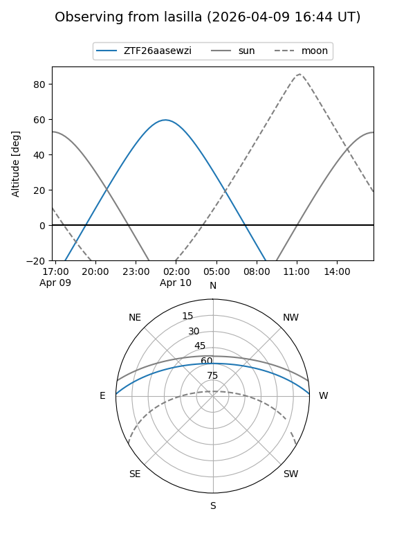
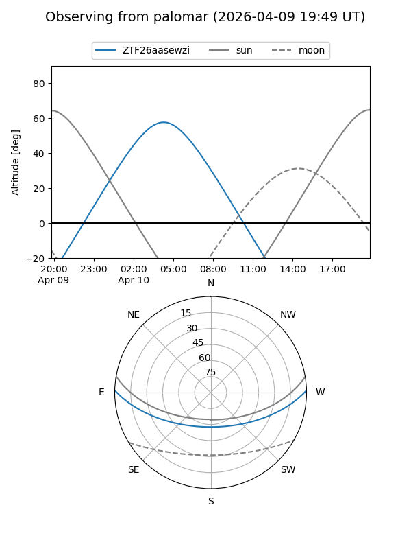

ZTF26aasewzi
Target ZTF26aasewzi at 2026-04-10 07:06
Aliases and brokers:
FINK: link
Lasair: link
ALeRCE: link
alt names
ZTF26aasewzi (ztf,fink_ztf)
Coordinates:
equatorial (ra, dec) = 145.3634,+1.19026
equatorial (HMS+DMS) = 09:41:27.23,+01:11:24.95
galactic (l, b) = (234.3772,+37.63686)
Flags:
Photometry:
last ztfg=20.11
1 ztfg detections
Lightcurve
Visibility


Additional plots